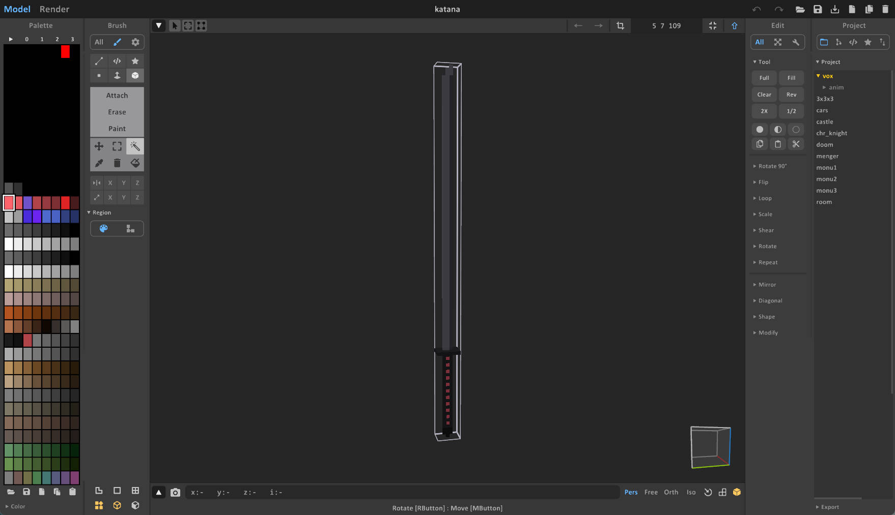
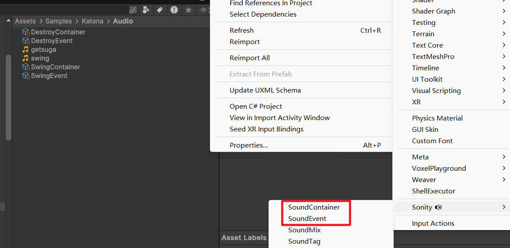

Tutorial: Katana
This tutorial guides you through creating a functioning Katana mod that can slice through voxel objects. You can find the complete source code and assets for this mod in the modding toolkit's Assets/Samples/Katana folder.
Step 1: Voxel Model and Import
First, you need a voxel model for the katana. You can create one using MagicaVoxel or find an existing .vox file.

- Import your
.voxfile into the project. - Use the Asset Processor to convert it into a prefab.
- For detailed steps on importing, refer to MagicaVoxel Import.
After import, you will have a prefab that serves as the visual base for your weapon.
Step 2: Sound Setup
To make the katana feel responsive, we need sound effects for swinging and hitting.
- Import your sound files (e.g.,
.mp3,.ogg) into Unity. - Create Sonity assets:
- Sound Event: Defines how the sound is played (volume, pitch, distance).
- Sound Container: Holds the actual audio clips.
- You can reference the setup in
Assets/Samples/Katana/Audio.

Step 3: Scripting the Logic
We need a custom script to handle the cutting mechanic. The katana works by recording the path of the blade tip during a swing and then projecting that path into "screen space" to cut through voxel chunks.
Create a new script named EntityKatana.cs.
Code Explanation
The script inherits from EntityFirableWeapon, which gives us built-in handling for trigger inputs (OnTriggerPressed, OnTriggerReleased).
- Swing Recording (
Update): When the trigger is held (capturingis true), we record the position of theTiptransform every frame. We also update aLineRendererto visualize the swing trail. - Trigger Logic:
Activate(): Starts recording points and plays the swing sound.Deactivate(): Stops recording and callsPerformCuts()to process the slice.
- Cutting Logic (
PerformCuts&CutSegment):- The script iterates through the recorded tip points.
- It performs a physics sweep (
Physics.OverlapBoxNonAlloc) between points to detect anyVoxelChunkobjects in the path. - If a chunk is hit, it calculates the start and end points of the cut in Screen Space.
- It calls
voxelDestructor.ScreenSpaceLineClear. This function projects the 2D screen line back into the 3D voxel volume to remove voxels, creating a clean "slice" effect relative to the camera view.
The Script
using Collider = Px5.Unity.PxCollider;
using Physics = Px5.Unity.PxPhysics;
using Px5.UnityExtensions;
public class EntityKatana : EntityFirableWeapon
{
public Transform Tip;
public float minPointDistance = 0.3f;
public float minAngleDeg = 12f;
public float sliceThickness = 0.25f;
public float sweepDistance = 500f;
private Camera cutCamera;
public LineRenderer lineRenderer;
private readonly List<Vector3> tipPoints = new();
private bool capturing;
public SoundEvent destroyEvent;
public SoundEvent swingEvent;
protected override void Awake()
{
base.Awake();
if (!cutCamera) cutCamera = Camera.main;
}
void Update()
{
if (capturing && Tip)
{
var p = Tip.position;
if (tipPoints.Count == 0)
{
tipPoints.Add(p);
}
else
{
var last = tipPoints[tipPoints.Count - 1];
if ((p - last).sqrMagnitude >= minPointDistance * minPointDistance)
{
tipPoints.Add(p);
}
}
if (lineRenderer)
{
lineRenderer.enabled = true;
lineRenderer.positionCount = tipPoints.Count;
lineRenderer.SetPositions(tipPoints.ToArray());
}
}
}
public override void OnTriggerPressed()
{
Activate();
}
public override void OnTriggerReleased()
{
Deactivate();
}
public override void Activate()
{
base.Activate();
capturing = true;
tipPoints.Clear();
if (lineRenderer)
{
lineRenderer.enabled = true;
lineRenderer.positionCount = 0;
}
if (swingEvent)
{
VoxelPlayground.Sound.SoundManager.Instance.PlaySoundEventAtPosition(swingEvent, Tip, Tip.position);
}
}
public override void Deactivate()
{
base.Deactivate();
capturing = false;
HideLine();
if (tipPoints.Count < 2) return;
PerformCuts(tipPoints);
tipPoints.Clear();
if (destroyEvent)
{
VoxelPlayground.Sound.SoundManager.Instance.PlaySoundEventAtPosition(destroyEvent, Tip, Tip.position);
}
CheckAmmoOtherwiseDestroy();
}
void HideLine()
{
if (lineRenderer != null)
lineRenderer.enabled = false;
}
private class ChunkLinePair : IEquatable<ChunkLinePair>
{
public VoxelChunk chunk;
public Vector2 screenA;
public Vector2 screenB;
public ChunkLinePair(VoxelChunk c, Vector2 a, Vector2 b)
{
chunk = c;
screenA = a;
screenB = b;
}
public bool Equals(ChunkLinePair other)
{
return chunk == other.chunk && screenA == other.screenA && screenB == other.screenB;
}
public override bool Equals(object obj)
{
return obj is ChunkLinePair other && Equals(other);
}
public override int GetHashCode()
{
unchecked
{
int hash = 17;
hash = hash * 31 + (chunk != null ? chunk.GetHashCode() : 0);
hash = hash * 31 + screenA.GetHashCode();
hash = hash * 31 + screenB.GetHashCode();
return hash;
}
}
}
private readonly HashSet<ChunkLinePair> hitPairs = new();
void PerformCuts(List<Vector3> pts)
{
if (!cutCamera) return;
hitPairs.Clear();
for (int i = 0; i < pts.Count - 1; i++)
{
var a = pts[i];
var b = pts[i + 1];
CutSegment(a, b);
}
var sw = (float)cutCamera.pixelWidth;
var sh = (float)cutCamera.pixelHeight;
var vp = Matrix4x4.identity;
vp.m00 = sw * 0.5f; vp.m03 = sw * 0.5f;
vp.m11 = sh * 0.5f; vp.m13 = sh * 0.5f;
vp.m22 = 1f; vp.m33 = 1f;
var worldToScreen = vp * cutCamera.projectionMatrix * cutCamera.worldToCameraMatrix;
foreach (var pair in hitPairs)
{
var chunk = pair.chunk;
var voxelDestructor = chunk != null ? chunk.GetComponentInParent<VoxelDestructor>() : null;
if (chunk != null && voxelDestructor != null && !voxelDestructor.indestructiable)
{
voxelDestructor.ScreenSpaceLineClear(pair.screenA, pair.screenB, worldToScreen, chunk);
}
}
}
private static Collider[] colliderCache = new Collider[100];
void CutSegment(Vector3 a, Vector3 b)
{
if (!cutCamera) return;
var screenA = cutCamera.WorldToScreenPoint(a);
var screenB = cutCamera.WorldToScreenPoint(b);
var worldNearA = cutCamera.ScreenToWorldPoint(new Vector3(screenA.x, screenA.y, cutCamera.nearClipPlane));
var worldNearB = cutCamera.ScreenToWorldPoint(new Vector3(screenB.x, screenB.y, cutCamera.nearClipPlane));
var worldNearMid = (worldNearA + worldNearB) * 0.5f;
var worldRight = (worldNearB - worldNearA).normalized;
var forward = (cutCamera.transform.position - worldNearMid).normalized;
var worldUp = Vector3.Cross(forward, worldRight).normalized;
var len = worldRight.magnitude;
if (len < 1e-4f) return;
var rot = Quaternion.LookRotation(forward, worldUp);
var zStart = cutCamera.nearClipPlane;
var samples = 10;
var zStep = sweepDistance / (float)(samples - 1);
for (int si = 1; si < samples; si++)
{
var worldZEnd = zStart + zStep * si;
var worldZStart = zStart + zStep * (si - 1);
var worldStartA = cutCamera.ScreenToWorldPoint(new Vector3(screenA.x, screenA.y, worldZStart));
var worldStartB = cutCamera.ScreenToWorldPoint(new Vector3(screenB.x, screenB.y, worldZStart));
var worldEndA = cutCamera.ScreenToWorldPoint(new Vector3(screenA.x, screenA.y, worldZEnd));
var worldEndB = cutCamera.ScreenToWorldPoint(new Vector3(screenB.x, screenB.y, worldZEnd));
var worldStartMiddle = (worldStartA + worldStartB) * 0.5f;
var worldEndMiddle = (worldEndA + worldEndB) * 0.5f;
var worldMiddle = (worldStartMiddle + worldEndMiddle) * 0.5f;
var worldWidth = (worldEndA - worldEndB).magnitude;
var worldLength = (worldStartMiddle - worldEndMiddle).magnitude;
var halfExtentsZ = new Vector3(worldWidth * 0.5f, sliceThickness, worldLength * 0.5f);
var overlapCount = Physics.OverlapBoxNonAlloc(worldMiddle, halfExtentsZ, colliderCache, rot, LayerMasksHelper.bulletHitLayerMask, QueryTriggerInteraction.Ignore);
for (int j = 0; j < overlapCount; j++)
{
var col = colliderCache[j];
if (!(col is PxVoxelCollider)) continue;
var chunk = col.GetComponent<VoxelChunk>();
if (chunk)
{
hitPairs.Add(new ChunkLinePair(chunk, screenA, screenB));
}
}
}
}
}
Step 4: Prefab Setup
Now, attach the script to your Katana prefab and configure the references:
- Add the
EntityKatanacomponent to the root of your prefab. - Tip: Assign a Transform located at the tip of the blade (create an empty child GameObject if needed). This is used to track the swing path.
- Line Renderer: Add a
LineRenderercomponent (usually to the same GameObject or a child) and assign it. This draws the trail. - Sound Events: Assign your Swing and Destroy (hit) sound events.
Step 5: Config the manifest
Locate the ModManifest file within your mod folder. This file is crucial for defining your mod's metadata and export settings.
- Export Prefabs: You will need to assign the Prefabs you generate (from Vox files) to this list to ensure they are included in the final build.
Step 6: Test and Publish
Test your mod in the local environment to ensure the cutting mechanics work as expected.